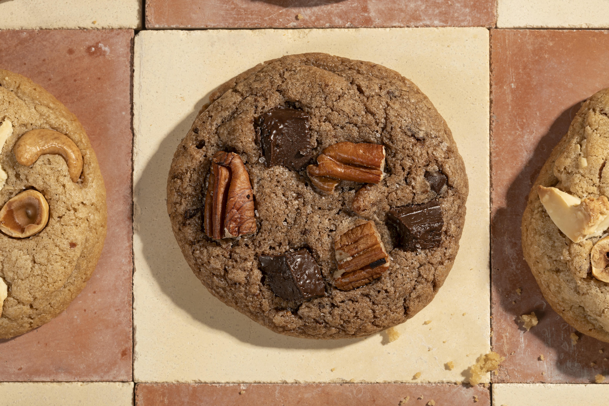

Turtle Cookies
Homepage

Description
Enjoy these incredibly easy to make turtle cookies. This recipe features Dear Deeja's Bakery very own sourdough starter.
Ingredients
- 340g all purpose bleached flour
- 1 tsp baking powder
- 1 tsp baking soda
- 3/4 tsp salt
- 1 cup melted unsalted butter
- 200g brown sugar
- 133g whtie sugar
- 2 egg yolks
- 1 1/2 tsp vanilla
- 140g sourdough discard
- 1 1/2 cup of chocolate chips
Steps
- Add all dry ingredients to a mixing bowl. Mix well.
- Add all wet ingredients to an alternative mixing bowl.
- Slowly add the dry ingredients to the wet bowl. Mix slowly
- When both wet and dry ingredients fully mixed together, roll cookie dough into individual balls.
- Place the cookie dough balls onto oven safe baking tray and bake at 350 degrees fahrenheit for around 10 minutes
- Let cool and enjoy!